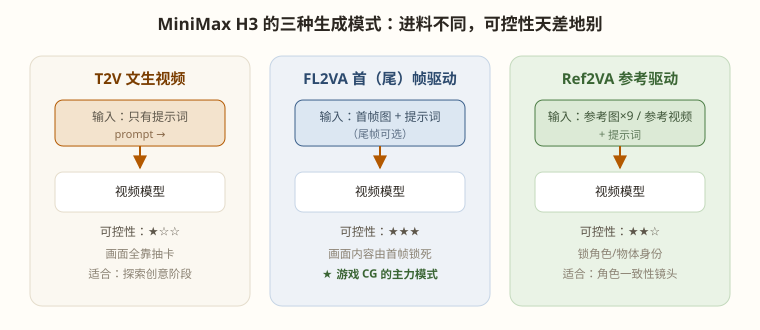

T2V / FL2VA / Ref2VA：进料方式决定可控性，首帧策略是游戏 CG 的核心打法

三种模式不是三个模型，而是同一套 H3 权重的三种进料方式——训练时模型随机见过"有首帧/没首帧/有参考"的各种组合，所以你的节点上这些输入口都可接可不接。这也正是 ComfyUI 里 MiniMaxH3ImageToVideo 节点的 first_frame / last_frame 标注为 optional 的原因。
只给提示词。画面构成、角色长相、场景布局全部随机。用途仅限创意探索期——"我想看看这个剧情大概什么感觉"。正式生产不用它，理由见第 2 章的两阶段对比。
给一张起始帧图像（可选再给结束帧），模型负责中间的过渡动画。
给最多 9 张参考图（或 2~15 秒的参考视频），模型提取其中的身份特征（角色长相、物体外观）用于生成。与 FL2VA 的区别：首帧决定"第一个画面长什么样"，参考图决定"这个角色/物体在任何画面里都长这样"。
match 快但身份还原弱；max（2048 短边）身份最准但慢数倍。人物特写镜头用 max，远景用 match。| 参数 | 推荐值 | 说明 |
|---|---|---|
| 帧数 | 124（≈5 秒） | 必须满足 17k+5；训练甜区 124~362 |
| 步数 | 8（标准）/ 12~16（精修） | 8 步是蒸馏配置；重要镜头加步提质量 |
| 采样器/调度器 | res_multistep + simple | 官方配套，别换 |
| 分辨率 | 1344×768 | 16GB 显存的平衡点位 |
| 帧率 | 24 fps | 模型按 24fps 训练，后期再插帧提速（第 16 章） |
S01 星舰滑过星云 → FL2VA：星舰外观必须全片一致，用 Flux 先定死舰体设计。
S05 舰桥警报亮起（状态切换）→ FL2VA 首尾帧：首帧"正常照明"，尾帧"红色警报灯"，模型自动补出灯光渐变的过渡。
S07 舰长瞳孔特写 → FL2VA + Ref2VA 叠加：首帧定特写构图，参考图（舰长设定照 ×3）保证这张脸和 S04 里站起来的是同一个人。
"抽卡"常被当作纯运气，其实有严格的方法论。核心原则来自第 15 章 RandomNoise 节的种子决定论：同种子同参数 = 逐像素复现。由此推导出三条纪律：
BlockCache/TeaCache 是近似算法，同种子不保证同结果（第 16 章）。种子管理纪律只在原生采样下严格成立；草稿期用缓存探索，锁定参数后务必回原生采样复跑确认。
这个镜头要出现"已设定"的角色/物体吗？
├─ 否 → 画面构图重要吗？
│ ├─ 重要（正式镜头）→ FL2VA 首帧驱动（默认答案）
│ └─ 不重要（创意探索）→ T2V 抽卡
└─ 是 → 该角色在本片出现 ≥3 个镜头吗？
├─ 否 → FL2VA + 锚句（Lv.1）
└─ 是 → FL2VA + Ref2VA（Lv.2）
└─ 还要拍系列/侧脸仍崩 → 角色 LoRA（Lv.3，第 21 章）
特殊分支：
├─ 镜头内有"状态切换"（亮灯/睁眼/变身）→ FL2VA 首尾帧双锁
└─ 运镜必须精确（走位/跟拍）→ V2V 白模驱动（第 14 章）
决策树的价值在于默认答案收束：80% 的镜头直接走 FL2VA，只剩 20% 需要思考——把注意力预算留给高潮镜头。